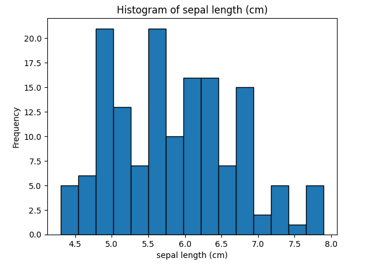

A C++ project to sort through different sized data sets using quick and heap sort.

A project written in Python to graph different aspects of the Iris dataset into different graphs.
These projects showcase data structures and algorithms through their implementation, and exemplify how these techniques could be useful in real-life scenarios. These projects utilize lists, trees, graphs, and sorting algorithms.
Project #1:
This project sorts through lists of different sizes using different sorting algorithms. Quick sort traverses
over three lists of variable sizes of 10, 100, and 1,000. Heap sort does the same but takes a considerably longer
time to do so.
Project #2:
This project was developed in Data Science Now. It tracks different aspects of the Iris dataset and creates
different graphs. The project cleans null values from the dataset, then different graphs visusalize the
lengths and widths of the pedals. The project utilizes bar graphs, a data table, a confusion matrix, and a decision tree.